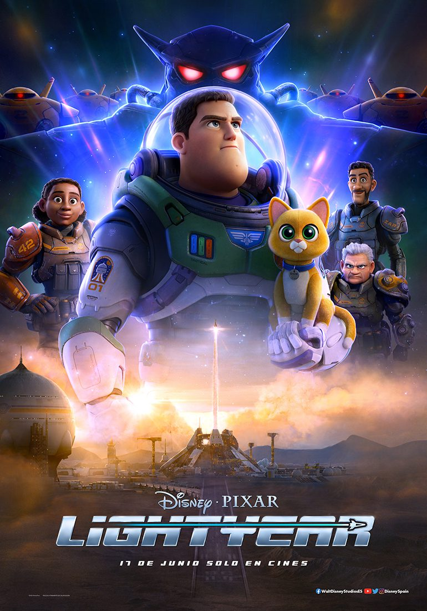
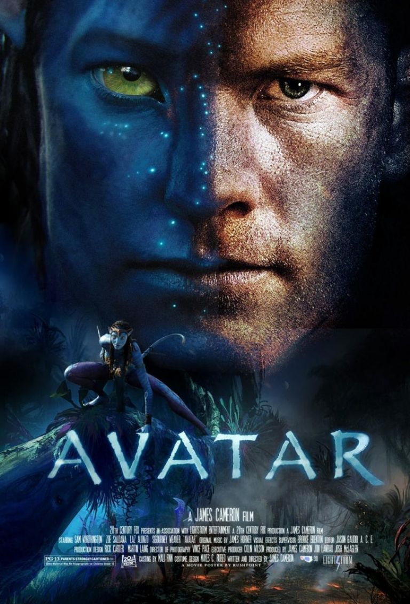
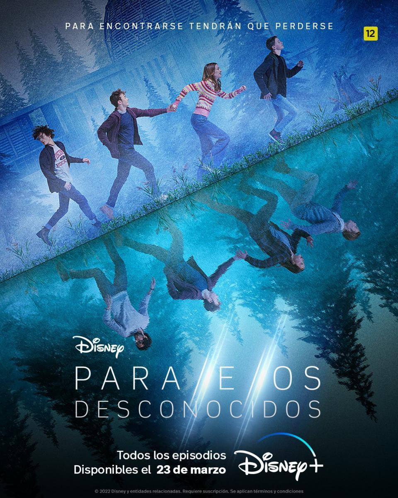

Películas y series recientes

En su segundo año luchando contra el crimen, Batman explora la corrupción existente en la ciudad de Gotham y el vínculo de esta con su propia familia. Además, entrará en conflicto con un asesino en serie conocido como "el Acertijo".
Ver trailerAnte una severa amenaza, el magizoólogo Newt Scamander lidera a un valiente grupo de magos y brujas que busca detener al malvado Gellert Grindelwald.
Ver trailerMaverick, quien lleva 30 años de servicio, es ahora instructor de pilotos militares. Una última misión, un sacrificio final, obliga a este maestro de los cielos a enfrentar las heridas abiertas del pasado y sus temores más profundos.
Ver trailerEn los años 70, Gru crece siendo un gran admirador de "Los salvajes seis", un supergrupo de villanos. Para demostrarles que puede ser malvado, Gru idea un plan con la esperanza de formar parte de la banda. Por suerte, cuenta con la ayuda de sus fieles seguidores, los Minions, siempre dispuestos a sembrar el caos.
Ver trailer

Buzz Lightyear se embarca en una aventura intergaláctica con un grupo de reclutas ambiciosos y su compañero robot.
Ver trailer

Jake Sully y Ney'tiri han formado una familia y hacen todo lo posible por permanecer juntos. Sin embargo, deben abandonar su hogar y explorar las regiones de Pandora cuando una antigua amenaza reaparece.
Ver trailer
La vida del peculiar abogado Saul Goodman mientras defiende a narcotraficantes en particular, y a toda suerte de criminales en general.
Ver trailerSophie es la esposa de un poderoso político y vive una vida privilegiada y lujosa. Pero todo comienza a desmoronarse cuando sale a la luz un escándalo sobre su esposo y lo acusan de un crimen escandaloso.
Ver trailerCatorce años después de que un virus mortal causara un apocalipsis global, Jade Wesker lucha por sobrevivir en un mundo invadido por criaturas infectadas mientras su pasado, su padre y lo que le sucedió a su hermana, Billie, la persiguen.
Ver trailer
La cuarta temporada de la serie de televisión estadounidense de drama de terror y ciencia ficción Stranger Things se lanzó en el servicio de transmisión Netflix en dos volúmenes.
Ver trailer
Cuando los superhéroes abusan de sus superpoderes en lugar de usarlos para el bien, unos "muchachos" se embarcan en una búsqueda heroica para exponer sus secretos.
Ver trailer

La vida de cuatro amigos se pone patas arriba cuando un evento misterioso dispersa al grupo en diferentes líneas de tiempo. Ellos hacen todo lo que pueden para comprender lo que ha sucedido y tratan de volver a sus vidas anteriores.
Ver trailer